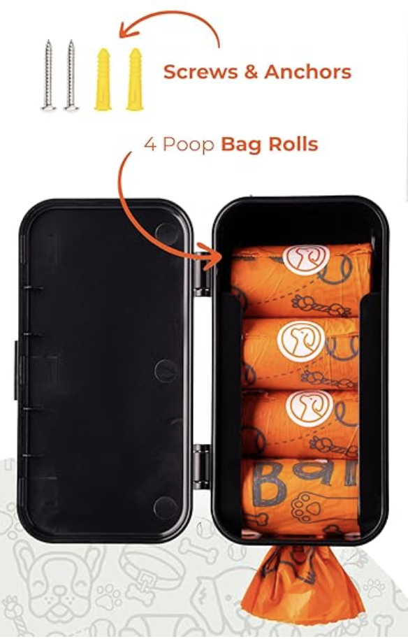
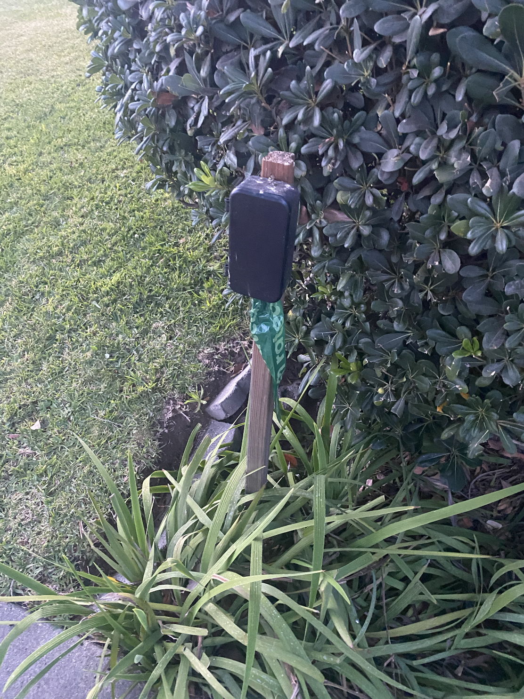
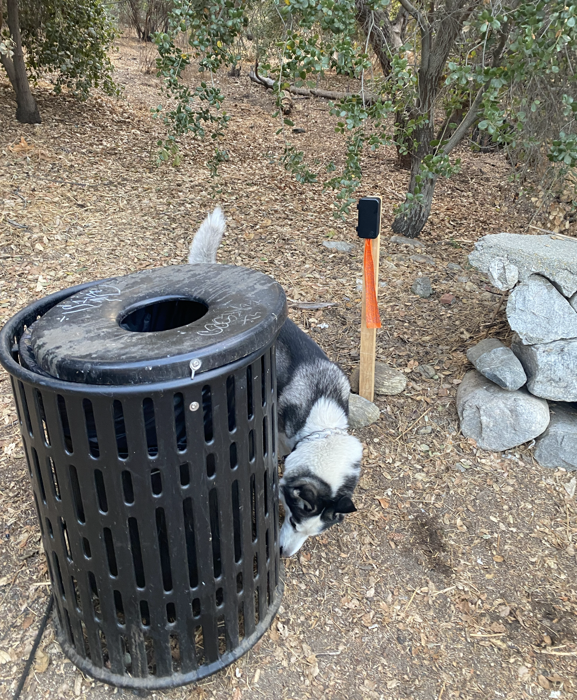

Get Started
1. Buy bag dispencer, such as this on amazon (not affiliate link)
2. Get a stake (3-4ft tall with pointy end) such as this from home depot (not affiliate link)
or any piece of scrap wood that is at least 1in x 1in in cross-section and 3ft tall
3. Assemble using screws supplied with the dispencer

4. Put in an inconspicuous place or near trash bin by hammering the stake into the ground.
Alternatively, use zipties to install dispencer on fences, city trashbins, or light posts

